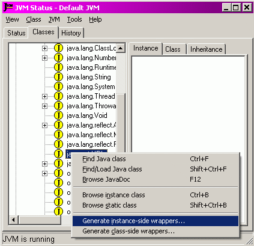
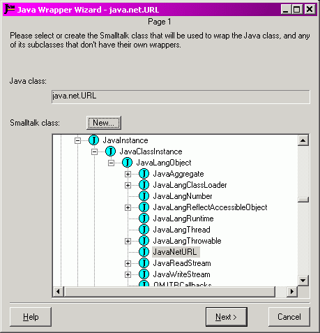
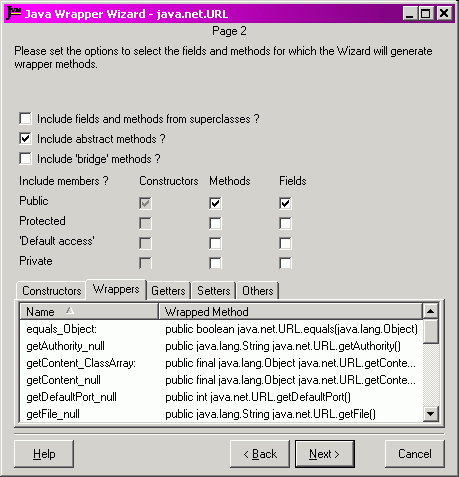
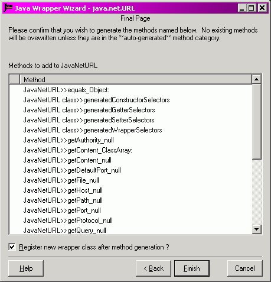

|
JNIPort for Dolphin Smalltalk |
|
|
Back to Goodies |
The Wrapper WizardThe Wrapper Wizard is a GUI tool to help create wrapper classes. It understands the conventions that JNIPort uses for such classes, and knows how to use Java reflection to generate forwarding methods and accessors for Java members. The tool is launched from the classes page of the Status Monitor. Select the target Java class or interface from the class tree (if the class is not already loaded then you can use the 'Find/Load Java class' command from the class menu). From here you can elect to generate instance-side or class-side wrapper methods: 
The wizard has three stages. In the first you select the target class to which the
wrapper methods will be added. This should be a subclass of

In this image, we are about to generate instance-side wrapper methods for the Java class
In stage 2 you select which of the Java class's members will be exposed via wrappers. By default wrappers are generated for all the public methods, fields, and constructors.  In this image, we have not changed the default. The tabs at the bottom of the page list the members for which wrappers will be generated given the current settings. In this case the 'Constructors' tab is available, even though we are generating instance-side methods; that is a harmless deficiency in the tool's user-interface that I'll quite probably never bother to fix. The 'Others' tab shows the additional “housekeeping” methods that the Wizard will generate in order to allow JNIPort to recognise that the target class is to be used as a wrapper. The final page shows a list of all the methods that are to be generated. I intend that a later version will allow you to “fine-tune” the selection at this point, but the current version does not have that capability. 
This image shows all the methods that will be generated. Note that the housekeeping
methods will be added to the class side of It is not illustrated here, but if any of the proposed methods would overwrite an existing method, then the first column will show a warning symbol. If the pre-existing method was is the '**auto generated**' category, then that would just be a warning (the Wizard puts all its generated methods into that category, so it assumes that it's OK to overwrite methods that it has generated itself). If the method is not in that category then the Wizard will show an error icon, and will not overwrite it. The tick box selects whether the new wrapper class should be registered with the current class registry. If so then it will be used for the rest of the session, otherwise it will not take effect until you re-start JNIPort. This option will be disabled if you are using ghost-classes or if the class is already registered. If you click 'Finish' then the methods will be added to the target class. A popup will confirm that the action is complete. If there were any errors (say, because there was a pre-existing method that should not be overwritten) then the popup will say so, and a longer description will be written to the transcript. |
Copyright © Chris Uppal, 2003-2005
Java, JNI (probably), JVM (possibly), and God knows what else, are trademarks of Sun Microsystems, Inc.